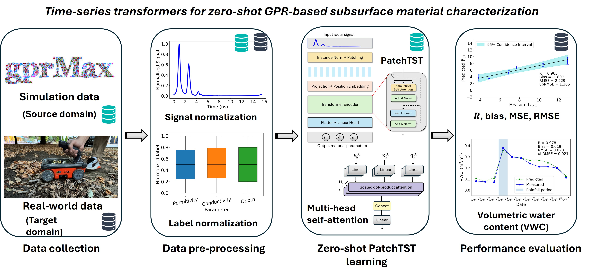
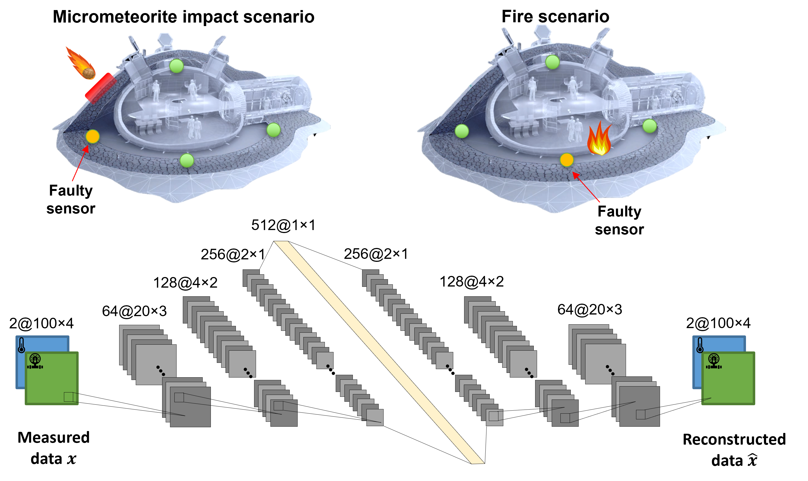

Welcome to my website! My name is Zixin Wang, and I am a postdoctoral research associate in Civil and Environmental Engineering at the University of Illinois Urbana-Champaign, working with Professor Mohamad Alipour (IDEA Lab). My postdoctoral research focuses on developing sim-to-real AI technologies for GPR-based nondestructive evaluation. Prior to joining UIUC, I completed my Ph.D. under the supervision of Professor Mohammad R. Jahanshahi at Purdue University (Smart Informatix Laboratory). My doctoral research centers on developing AI-driven structural health monitoring technologies for complex structural and sensing systems, with a particular focus on fostering resilient extraterrestrial habitats using physics-informed machine learning. Prior to joining Purdue, I completed my master’s degree at Tongji University under the supervision of Professor Zheng Lu. My master’s research focused on advancing structural vibration control techniques to enhance the resilience of civil infrastructure against earthquakes and strong winds.